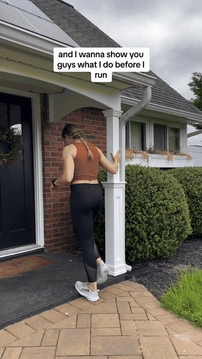
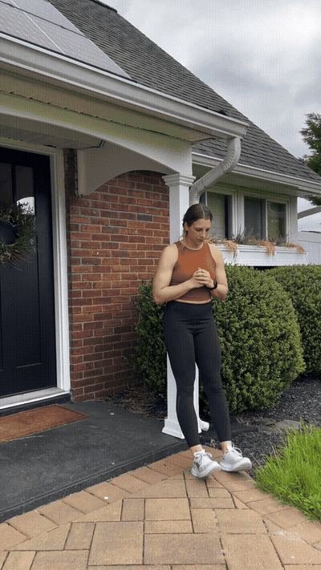
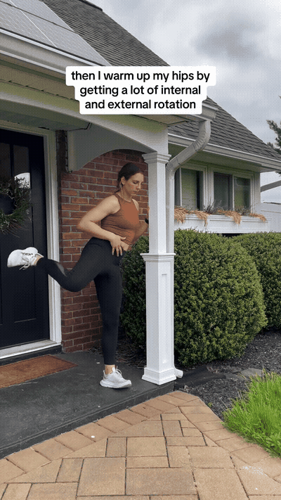
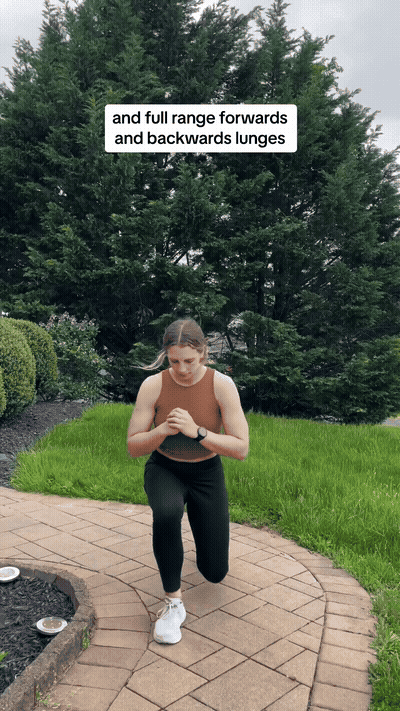
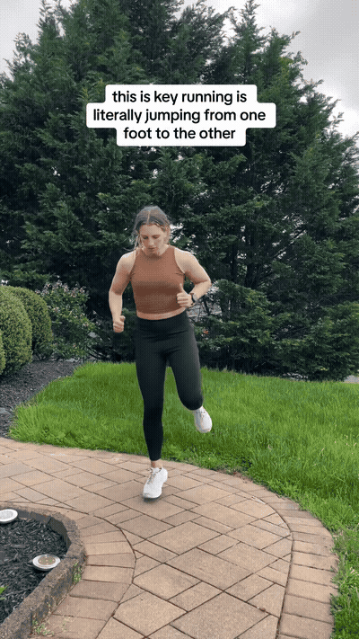

Perform a single-leg eccentric calf raise with a slow lowering phase, then stretch the calf and bias the soleus. Use support if balance or ankle control is limited.

Work the tibialis anterior, then use step-downs and single-leg drops to practice absorbing force. Start from a low height and keep the landing quiet.

Warm the hips through internal and external rotation and a comfortable full range. Keep the pelvis controlled rather than forcing the end position.

Use forward and backward lunges, then add explosive movement, lateral lunges, and single-leg jumping. Running is repeated single-leg force production, so practice quiet, controlled contacts.

Finish with active stretching for the hamstrings, hips, and back. Keep the movement dynamic enough to prepare for running rather than fatigue the tissues.